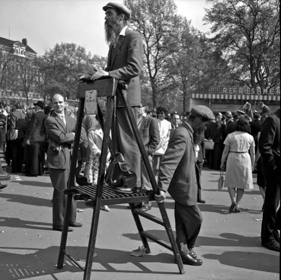

Located on the northeast edge of Hyde Park in London, Speakers' Corner stands today as an internationally recognized symbol of democracy, civil liberty, and the fundamental human right to free speech. Every Sunday, crowds gather to hear speakers stand on soapboxes, sharing ideas that range from religious doctrines and political philosophies to satirical commentary. However, the ground beneath this celebrated platform has a grim history that contrasts sharply with the ideals of liberty it represents today.

Before it became a sanctuary for the open exchange of ideas, the area near Marble Arch was known as Tyburn, London's primary site for public executions from 1196 to 1783. The notorious "Tyburn Tree"—a massive triangular wooden gallows capable of hanging multiple people simultaneously—dominated the landscape. Tens of thousands of people, including famous religious dissidents, rebels, and common criminals, met their deaths here in front of massive, rowdy crowds.
Crucially, English law granted those condemned to die the right to deliver a "last dying speech" before the executioner carried out the sentence. While some used this final moment to repent for their crimes, others utilized it to deliver fiery political statements, critique the monarchy, or declare their religious martyrdom. These public, emotionally charged final speeches planted the earliest, paradoxical seeds of public discourse on the very site where authoritarian power was most brutally displayed.
Following the cessation of public executions at Tyburn, Hyde Park evolved into a popular park for the citizens of London. By the mid-19th century, civil unrest was brewing across Britain as working-class movements demanded broader voting rights and economic reforms. In 1855, large-scale protests erupted in Hyde Park against the Sunday Trading Bill, demonstrating the park's strategic value as a space for mass public demonstration.
The turning point arrived in July 1866, when the Reform League—a political organization campaigning for manhood suffrage—organized a massive rally at the park. Although the government closed the park gates and deployed police forces to block the event, the determined crowd tore down the railings and entered by force. Three days of intense rioting and clashes with authorities followed, forcing the government to recognize that suppressing public assembly was no longer a viable option.
The persistent struggles of the Reform League and other civil rights activists eventually led to a major legislative breakthrough. In 1872, the British Parliament officially enacted the Parks Regulation Act. This milestone legislation granted local authorities the power to designate specific areas within public parks where public addresses and assemblies could take place legally.
Hyde Park's northeast corner was formally designated as one of these designated public speaking zones. This act did not technically establish an absolute right to free speech in a constitutional sense, but it created a regulated, protected sanctuary where individuals could voice their opinions without requiring prior government permission or fearing immediate arrest for unlawful assembly.
Over the decades, Speakers' Corner grew from a local venue for working-class agitation into a global stage. It became a rite of passage for some of the world's most influential thinkers, writers, and political leaders. The park provided a vital testing ground for ideas that would later reshape modern history, providing a voice to the voiceless and a platform for peaceful dissent during times of profound global transformation.
Today, in a digital era increasingly dominated by algorithmic echo chambers and online moderation, the physical space of Speakers' Corner remains as relevant as ever. It serves as a living reminder that democracy requires raw, unfiltered, face-to-face dialogue. The historic transformation of this ground—from a place where the state silenced citizens through execution to a place where the state protects the citizen's right to speak—remains one of the greatest triumphs in the history of human freedom.
← Back to Home